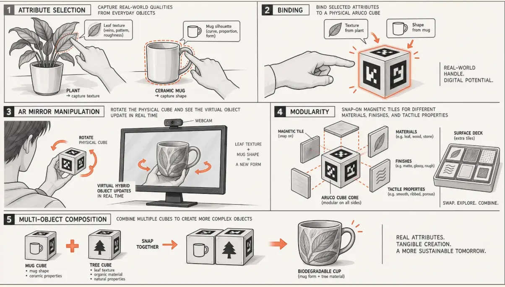
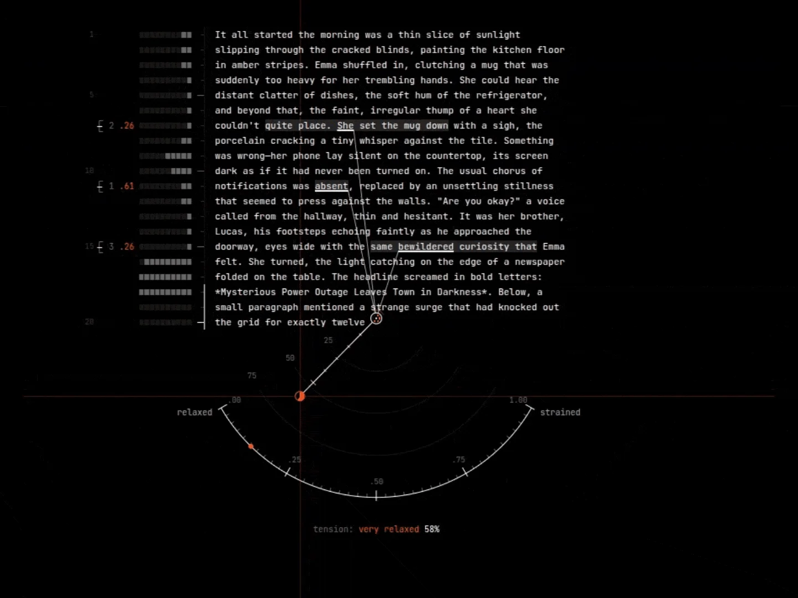
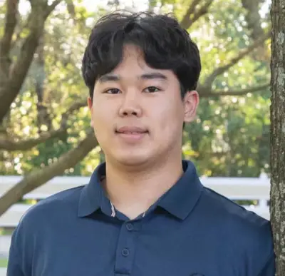

Papershop
Draw on paper, point, and speak. The physical desk is the editor.
Interacting with AI should feel like a breath of fresh air.
For over thirty years the Tangible Media Group, led by Professor Hiroshi Ishii, has bridged the digital and physical worlds. The Working Group carries that work into the age of AI.
We are tired of screens, chat bots, and endless prompting.
Why can't we grasp an agent and steer it in real time?
We want to increase the speed and bandwidth of human–machine interaction by 100×.
We are the interaction maximalists.
We give handles to ideas: simple controls bound to the meaning of what a model generates — a slider bound to “more poetic,” one puck per idea in a brainstorm. The output grows as you move them, with no submit button.

Draw on paper, point, and speak. The physical desk is the editor.

One puck per idea. Pull, push, flip, and turn its knobs.

All our complex lives all at once.

Language models at 60 frames per second.





Recruiting UROPs for IAP and Spring 2027. Bring something you can contribute and an appetite for learning the rest.
Read the UROP opening